UCEK-2027 · İzmir Arazi Çalışması Cep Broşürü (A5 · 148 × 210 mm)
20 Sayfa · Açık Tonlu Baskı Düzeni · QGIS 3.44 Haritalı
20 Sayfa · Açık Tonlu Baskı Düzeni · QGIS 3.44 Haritalı
Horst-graben tektoniğinden Holosen kıyı değişimlerine, UNESCO Dünya Mirası alanlarından Cittaslow ve kırsal miras rotalarına uzanan CBS tabanlı saha inceleme kılavuzu.
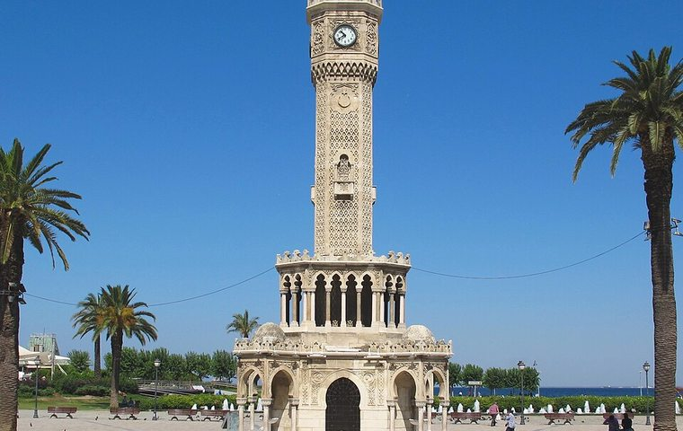
Konak · Saat Kulesi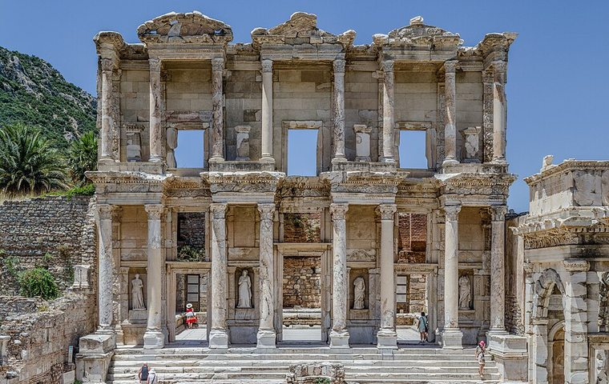
Efes · UNESCO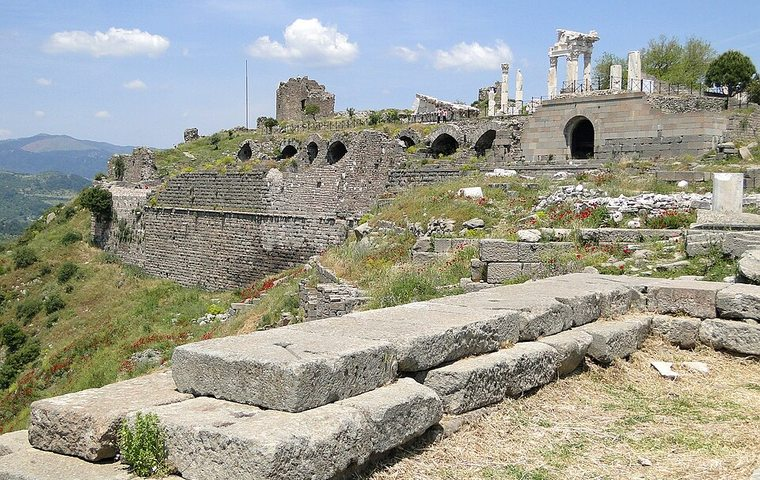
Bergama · UNESCO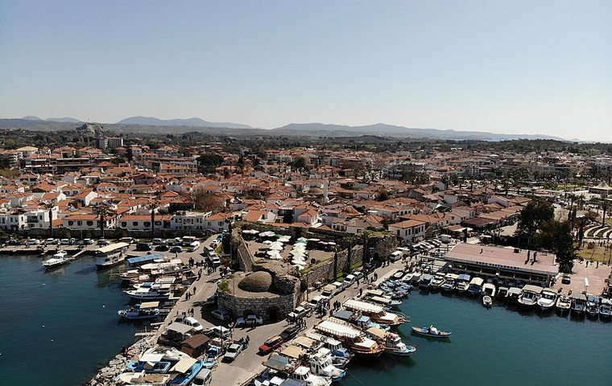
Seferihisar · Teos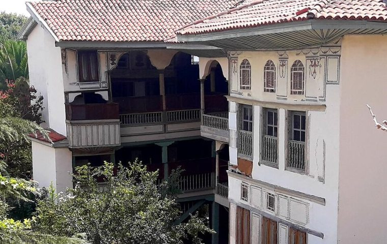
Birgi · Tarihi Doku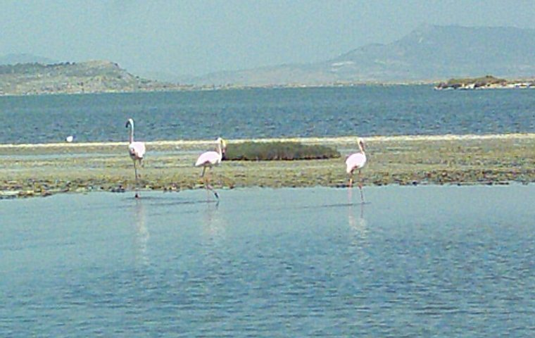
Gediz Deltası · RamsarQR kod mobil cihaz kamerasıyla okutularak tüm durakların canlı harita katmanlarına, uydu/rölyef görünümlerine ve Türkçe-İngilizce sesli anlatımlarına doğrudan erişilebilir.
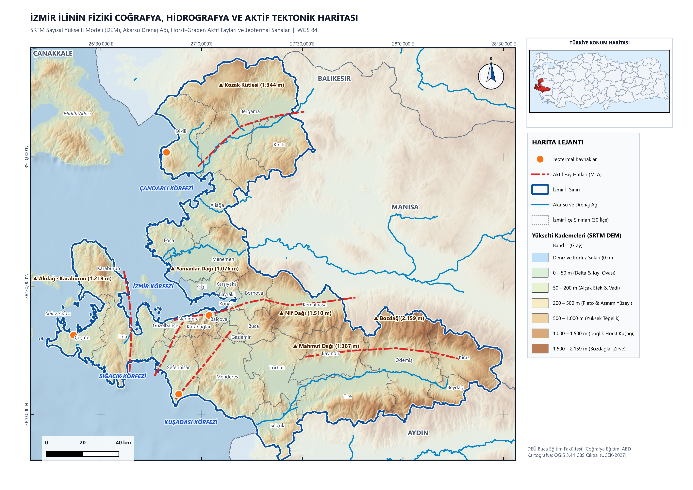
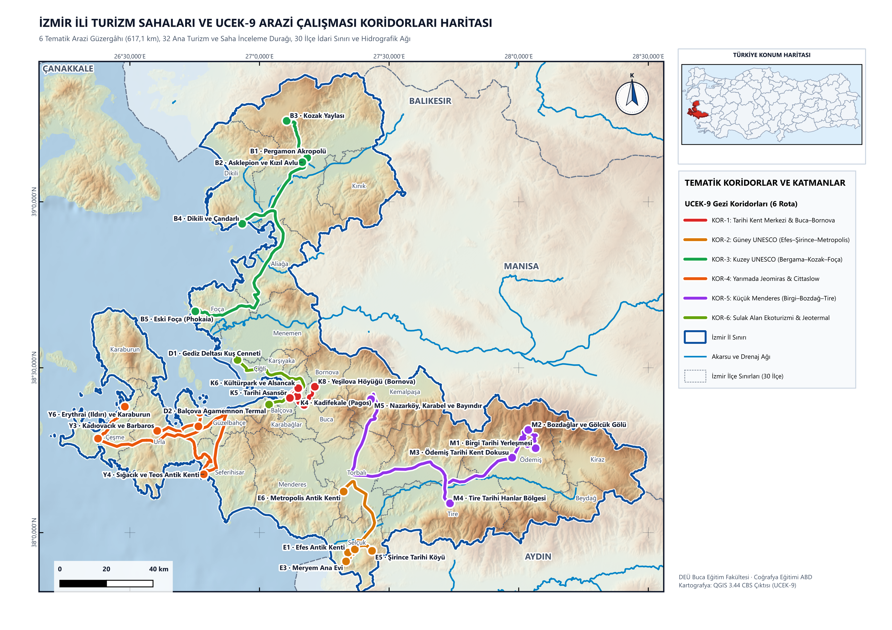
| Kod | Tematik Güzergâh Başlığı | Durak | Mesafe | Süre |
|---|---|---|---|---|
| KOR-1 | Tarihi Kent Merkezi, Liman Mirası ve Buca–Bornova | K1–K8 (8) | 42,6 km | Tam/Yarım Gün |
| KOR-2 | Güney UNESCO: Efes, Ayasuluk, Şirince, Metropolis | E1–E6 (6) | 74,4 km | Tam Gün |
| KOR-3 | Kuzey UNESCO: Bergama, Kozak, Dikili ve Foça | B1–B5 (5) | 159,5 km | Tam Gün |
| KOR-4 | Yarımada Jeomiras, Cittaslow, Bağ Yolu ve Çeşme | Y1–Y6 (6) | 157,8 km | Tam Gün |
| KOR-5 | Küçük Menderes: Birgi, Bozdağ, Ödemiş, Tire | M1–M5 (5) | 133,6 km | Tam Gün |
| KOR-6 | Gediz Deltası Kuş Cenneti ve Balçova Termal | D1–D2 (2) | 49,2 km | Yarım Gün |
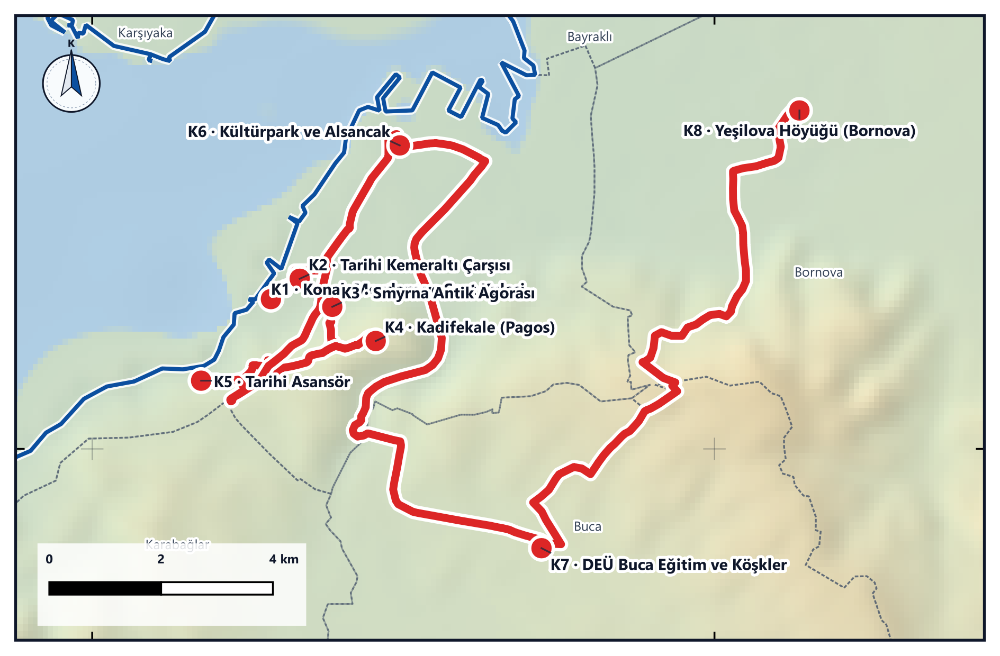
1901 tarihli İzmir Saat Kulesi, 18. yy Yalı (Konak) Camii ve Hükümet Konağı ile kentin idari-simgesel odağıdır; 19. yy rıhtım dolguları öncesi kıyı çizgisi değişimini gözlemleme imkânı sunar.
EN: Symbolic civic heart of İzmir featuring the 1901 Clock Tower and Yalı Mosque; illustrates 19th-century shoreline reclamation.
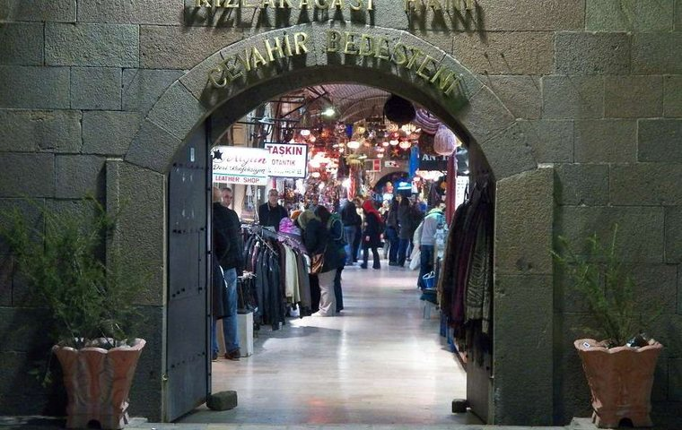
K2Antik iç liman koyunun Holosen-Osmanlı sürecinde dolmasıyla gelişen 14.500 işyerlik tarihi ticaret dokusu; Kızlarağası Hanı (1744), camiler ve Havra Sokağı ile çok kültürlü kent belleğini yansıtır.
EN: Historic bazaar formed over the silted ancient inner harbor, uniting Kızlarağası Inn (1744) and Havra Street's multicultural heritage.
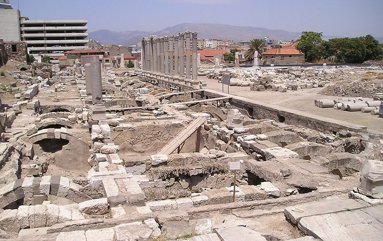
K3Pagos kuzey yamacında MÖ 4. yy’da kurulan ve MS 178 depremi sonrası yeniden inşa edilen Roma Devlet Agorası; tonozlu bazilika bodrumu ve antik su kanallarıyla kentsel arkeolojinin merkezidir.
EN: Graeco-Roman civic agora on northern Mt. Pagos featuring preserved vaulted basilica substructures and spring-water channels.
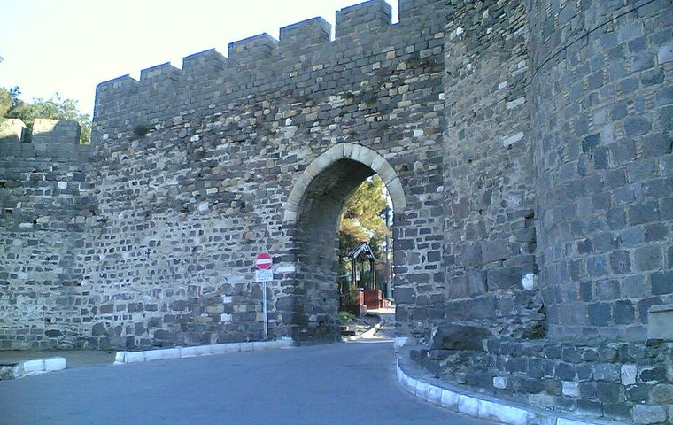
K4186 m yükseltili andezitik-dasitik Pagos kütlesi üzerinde yer alan Helenistik-Bizans-Osmanlı kalesi; İzmir Körfezi çöküntü oluğu, İzmir Fayı ve Gediz Deltası’nı tek bakışta okuma olanağı verir.
EN: 186 m volcanic-andesitic acropolis offering a complete tectonic panorama across the İzmir Gulf graben and Gediz Delta.
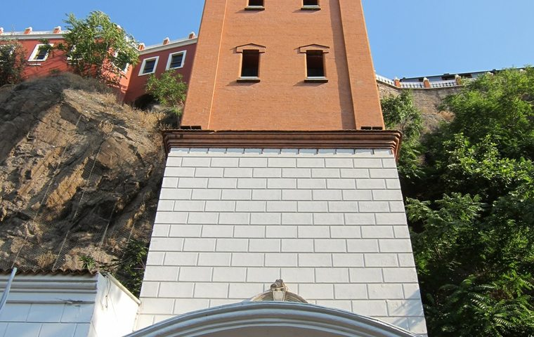
K5Karataş kıyı falezini (58 m kot farkı) aşarak iki kentsel terası birleştirmek üzere 1907’de Nesim Levi tarafından yaptırılan mühendislik mirası; Dario Moreno Sokağı ile bütünleşir.
EN: 1907 cliff-face elevator bridging a 58 m coastal scarp between Karataş and Halil Rıfat Paşa terraces alongside Dario Moreno Street.
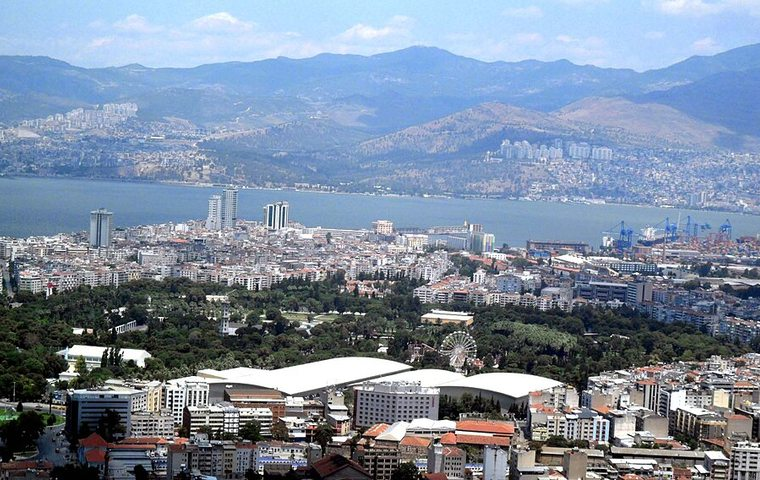
K61922 yangını sonrası kurulan Cumhuriyet’in kamusal yeşil alanı Kültürpark, APİKAM Kent Arşivi, Alsancak Garı (1858) ve Tarihi Havagazı Fabrikası ile liman ardı endüstriyel mirası temsil eder.
EN: Early Republican green parklands paired with Alsancak's 19th-century railway terminal and restored industrial heritage.
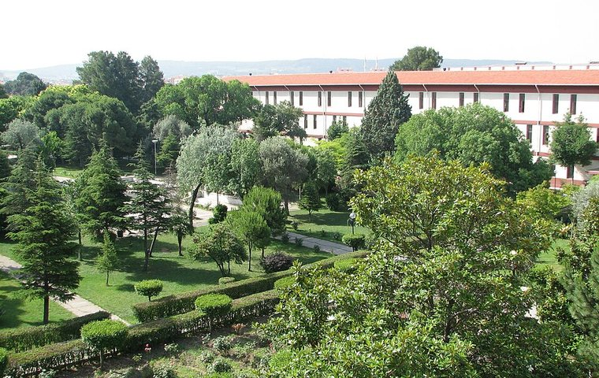
K71959 kökenli Buca Eğitim Enstitüsü mirasını sürdüren DEÜ Buca Eğitim Fakültesi yerleşkesi ile Forbes ve Rees köşkleri başta olmak üzere 19. yy Levanten banliyö-bahçe mimarisini kapsar.
EN: DEÜ Buca Faculty of Education campus (rooted in 1959) surrounded by historic 19th-century Levantine garden mansions.
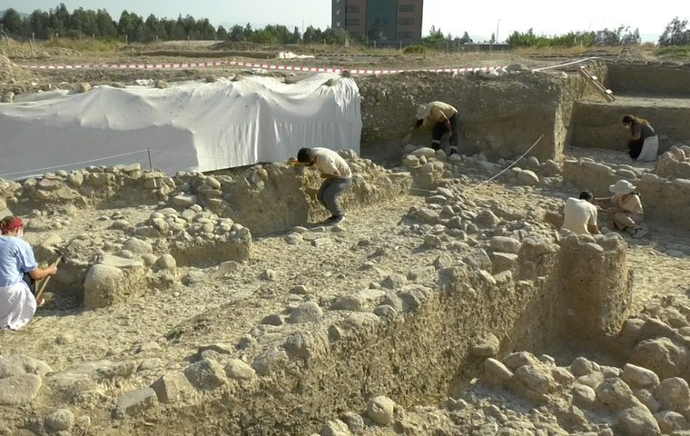
K8Bornova alüvyal konisi üzerinde İzmir’in 8.500 yıllık Neolitik başlangıcını belgeleyen Yeşilova Höyüğü ve Arkaik dönemin kıyı yerleşmesi Bayraklı Tepekule (Eski Smyrna) bütünleşik durağıdır.
EN: 8,500-year-old Neolithic Yeşilova Mound on the Bornova alluvial fan paired with Archaic Old Smyrna at Bayraklı Tepekule.
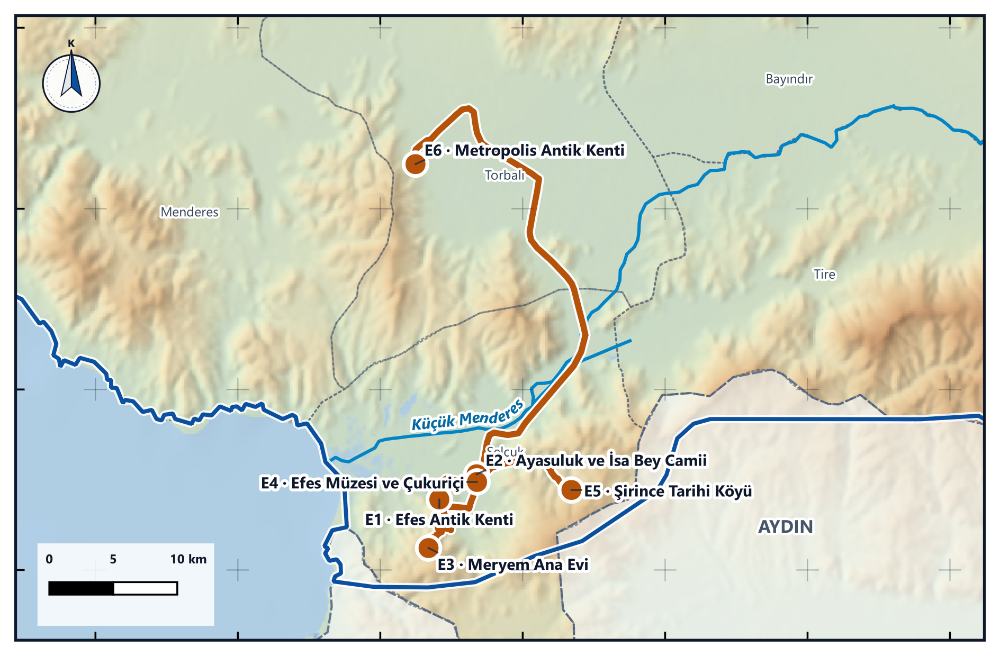
UNESCO Dünya Mirası Efes Antik Kenti; Celsus Kütüphanesi, Yamaç Evler, Büyük Tiyatro ve Küçük Menderes alüvyonlarıyla denizden 6–9 km içeride kalan antik limanıyla dünya ölçeğinde jeoarkeoloji laboratuvarıdır.
EN: UNESCO World Heritage city showcasing Celsus Library, Terrace Houses, and a Roman harbor stranded 6–9 km inland by Kaystros siltation.
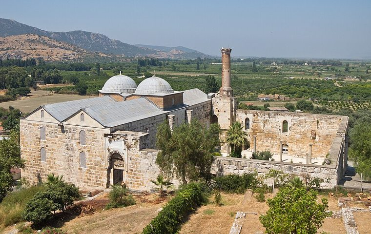
E2İlk Efes yerleşmelerinin çekirdeği Ayasuluk Tepesi; Antik Dünyanın Yedi Harikasından Artemis Tapınağı, Bizans St. Jean Bazilikası ve 1375 tarihli Aydınoğulları İsa Bey Camii’ni bir araya getirir.
EN: Multi-layered sacred hill uniting the Temple of Artemis, Basilica of St. John, and the 1375 Aydınoğulları İsa Bey Mosque.
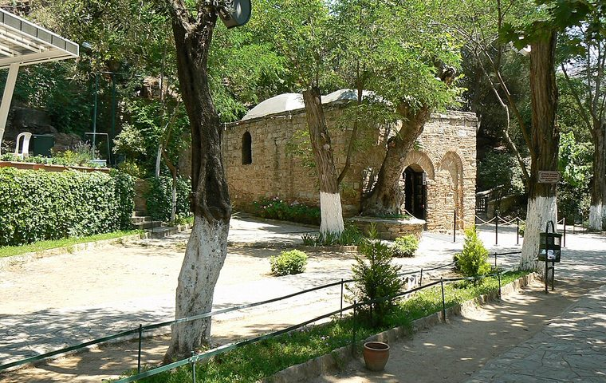
E3Bülbül Dağı kızılçam-maki orman kuşağında (380 m) konumlanan Hristiyan hac merkezi; inanç turizmi yönetimi ile Akdeniz orman ekosisteminin yangın dirençliliği birlikte incelenir.
EN: Christian pilgrimage sanctuary on Mt. Bülbül (380 m) embedded within Mediterranean pine-maquis forest ecosystems.
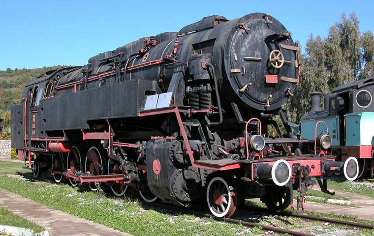
E4Tunç Çağı metalürji merkezi Çukuriçi Höyük, Efes Arkeoloji Müzesi’nin seçkin koleksiyonu ve Batı Anadolu’nun ilk demiryolu mirasını sergileyen Çamlık Buharlı Lokomotif Müzesi’ni kapsar.
EN: Prehistoric Çukuriçi Mound, Ephesus Archaeological Museum, and the Çamlık Open-Air Steam Locomotive Museum.
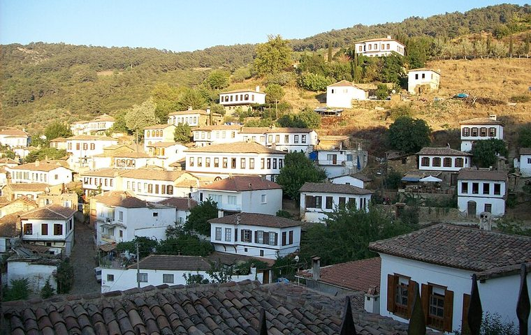
E5Eğimli yamaç topoğrafyasına uyumlu taş-ahşap cumbalı konutları, bağ-zeytin terasları ve kırsal turizm ekonomisiyle sürdürülebilir geleneksel mimarinin korunmuş örneğidir.
EN: Historic hillside village renowned for climate-responsive stone-and-timber vernacular houses and terraced orchards.
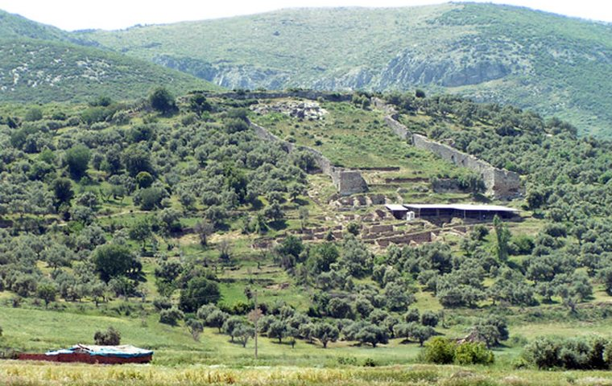
E6Küçük Menderes ve Torbalı ovalarına hâkim akropol üzerinde kurulu Helenistik-Roma kenti; tiyatro, bouleuterion, hamam-gymnasion kompleksleri ve deneysel arkeoloji uygulamalarıyla öne çıkar.
EN: Strategic Hellenistic–Roman acropolis overlooking the Torbalı plain, noted for its marble theatre and bouleuterion.
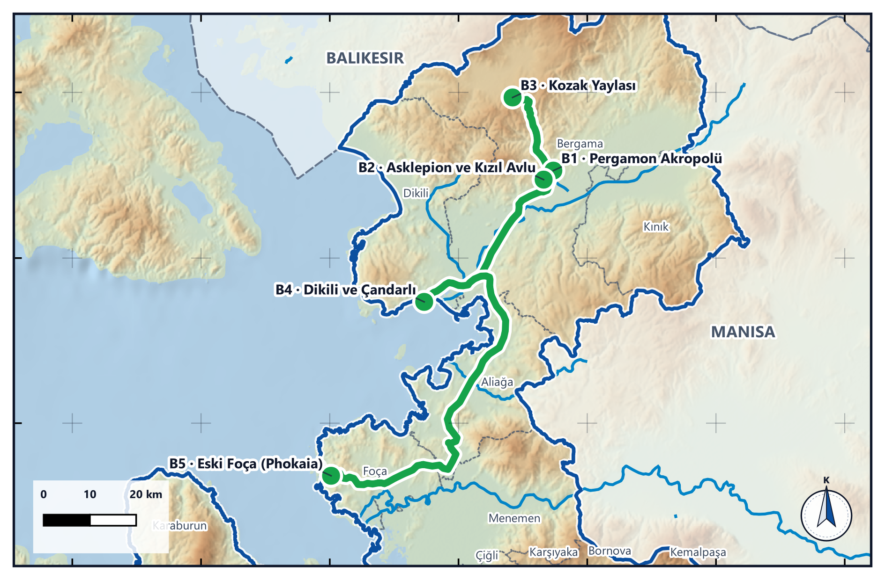
Bakırçay Ovası’ndan 300 m yükselen sarp andezitik tepe üzerinde kurulu UNESCO Dünya Mirası; dik yamaç tiyatrosu, Trajaneum terası ve basınçlı su kemerleriyle topoğrafya-mühendislik başyapıtıdır.
EN: UNESCO Pergamon Acropolis atop a 300 m andesitic mesa featuring the steepest ancient theatre and pressurized aqueducts.
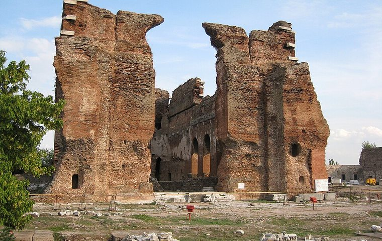
B2Antik dünyanın öncü tıp-şifa merkezi Asklepion ile Bergama Çayı’nı çift tünel tonozla aşan anıtsal Roma tapınağı Kızıl Avlu (Serapeion) ve Osmanlı Bergama Arastası’nı bütünleştirir.
EN: Ancient healing sanctuary of Asklepion paired with the monumental Red Basilica spanning the Selinus stream via twin tunnels.
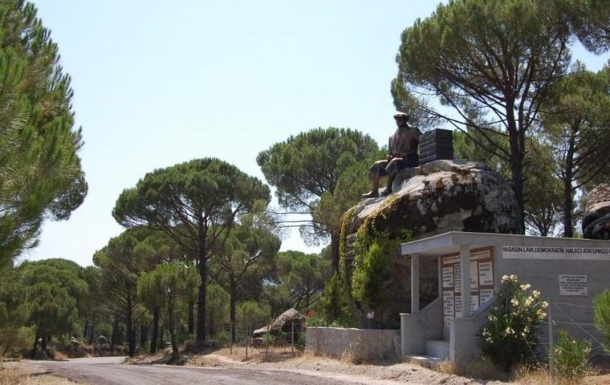
B3Granitoyid batolit ayrışma topoğrafyası (tor blokları) üzerinde Türkiye’nin en önemli fıstık çamı (Pinus pinea) agro-ekosistemini ve kıyıdaki sığlaşmış Elaia antik limanını barındırır.
EN: Granitoid highland plateau supporting Türkiye's premier stone-pine agroforestry alongside Pergamon's silted port of Elaia.
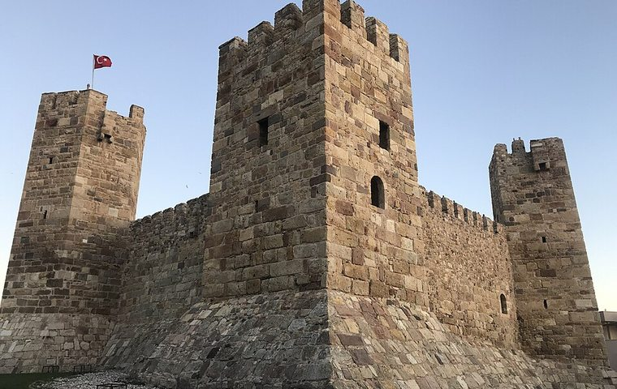
B4Tektonik kırık kontrollü Dikili–Bademli kıyı jeotermal kaynakları, volkanik kıyı morfolojisi ve Çandarlı Körfezi’ni denetleyen tarihi Ceneviz-Osmanlı Çandarlı Kalesi’ni içerir.
EN: Fault-controlled coastal geothermal springs at Dikili–Bademli and the historic Genoese–Ottoman fortress at Çandarlı.
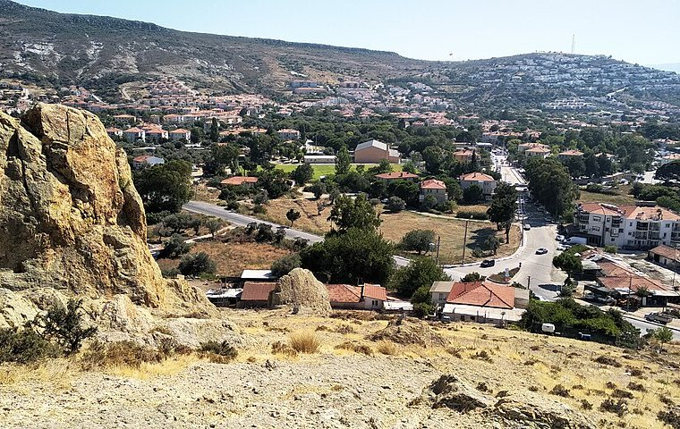
B5İyon kenti Phokaia mirası, Akdeniz foku (Monachus monachus) Özel Çevre Koruma Bölgesi adaları, tüf kıyı şekilleri ve Kozbeyli kırsal taş konut dokusunu bir araya getirir.
EN: Ancient Phokaia marine conservation zone (monk seal habitat), volcanic islets, and Kozbeyli's stone rural architecture.
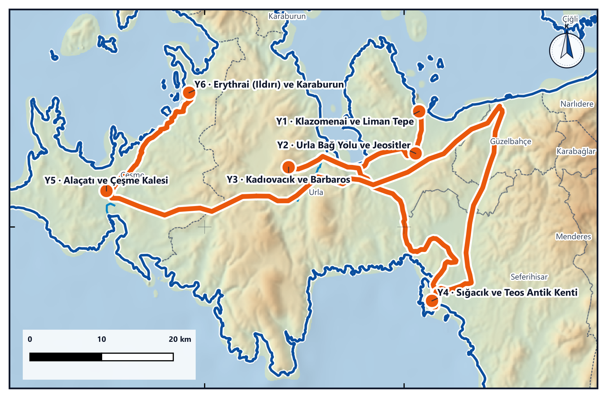
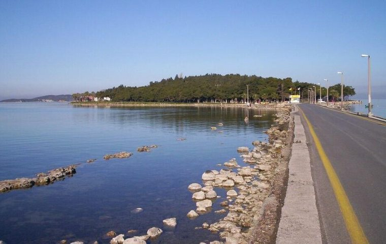
Y1Tunç Çağı kıyı batıklarını barındıran Liman Tepe, MÖ 6. yy Klazomenai zeytinyağı işliği ve 1865 Osmanlı tahaffuzhanesiyle dünyada sayılı korunmuş örneklerden Karantina Adası’nı kapsar.
EN: Submerged Bronze Age port of Liman Tepe, Archaic Klazomenai olive-oil workshop, and historic 19th-century Quarantine Island.
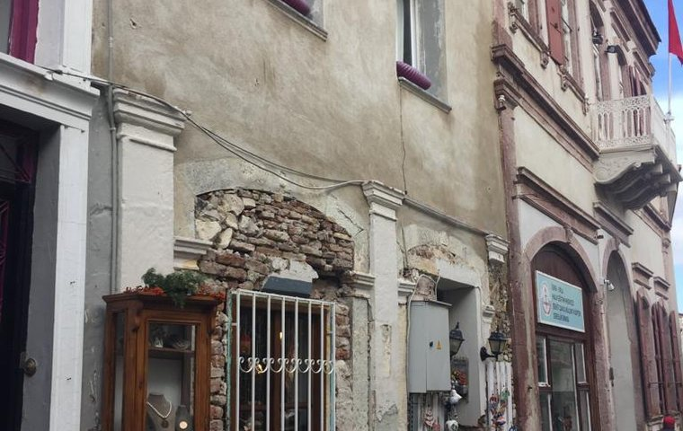
Y2Miyosen tortul-volkanik Urla jeositleri, butik bağcılık ve agro-turizm ekseni (Urla Bağ Yolu), tarihi Sanat Sokağı ve dünya ölçeğindeki Köstem Zeytinyağı Müzesi’ni buluşturur.
EN: Miocene geosites integrated with the Urla Vineyard Route, historic Art Street, and the Köstem Olive Oil Museum.
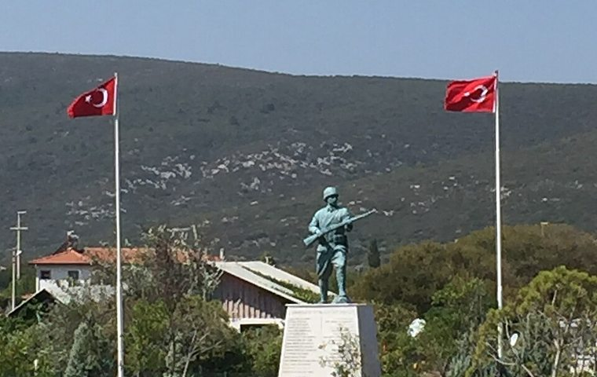
Y3Karstik kireçtaşı akiferini belgeleyen tarihi Kadıovacık su kuyuları jeomirası ile yerel üretici ve somut olmayan kültür mirası temelli Barbaros Köyü kırsal kalkınma modelini sunar.
EN: Karstic groundwater heritage wells of Kadıovacık paired with community-led rural cultural tourism in Barbaros Village.
2009’da Türkiye’nin ilk Cittaslow (Sakin Şehir) unvanını alan Seferihisar, 16. yy Osmanlı Sığacık Kalesi üretici pazarı ve çift limanlı İyon kenti Teos’un jeoarkeolojik mirasını kapsar.
EN: Türkiye's first Cittaslow town (Seferihisar), 16th-century Sığacık walled settlement, and the dual-harbor Ionian city of Teos.
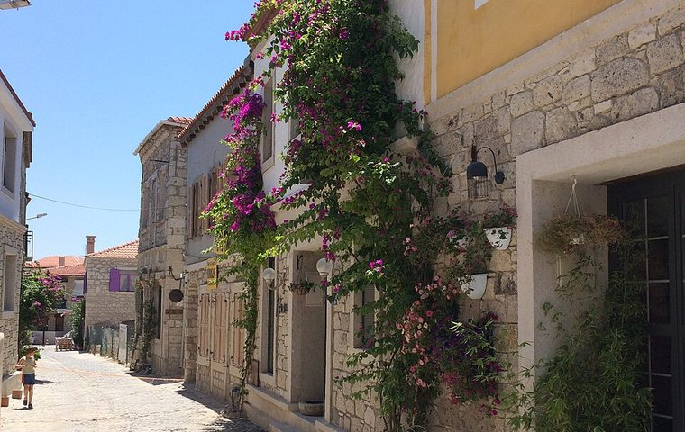
Y5Piroklastik tüf taş konut mimarisi ve rüzgâr sörfü mikroiklimiyle ünlü Alaçatı, 1508 tarihli Çeşme Kalesi, Ilıca deniz içi termal kaynakları ve Bağlararası Tunç Çağı höyüğünü içerir.
EN: Alaçatı's pyroclastic tuff architecture and windsurfing bay alongside Çeşme Castle (1508) and submarine thermal springs.
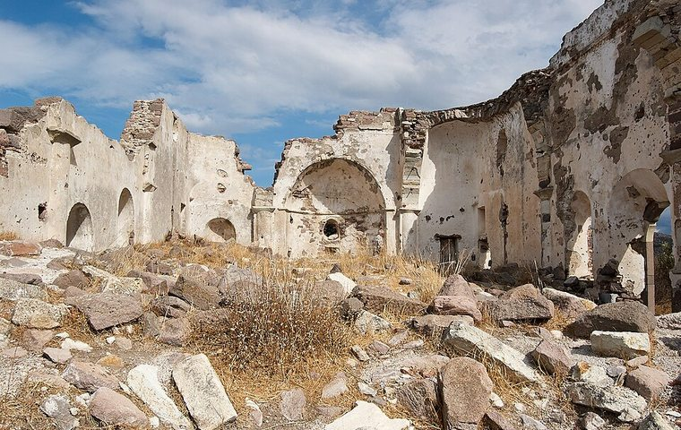
Y6Roma dönemi ticari amfora üretimiyle tanınan İyon kenti Erythrai (Ildırı), riyolitik kıyı domları ve Karaburun Yarımadası’nın zengin Neojen stratigrafi-biyomiras peyzajını temsil eder.
EN: Archaic–Roman port of Erythrai (Ildırı) overlooking volcanic islands and the Karaburun Peninsula's Neogene geoheritage.
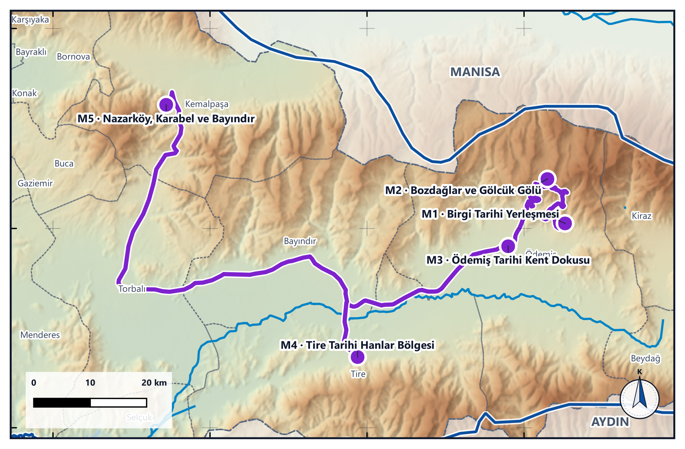
Bozdağlar güney eteği alüvyal konisi üzerinde UNESCO Dünya Mirası Geçici Listesi’ndeki tarihi yerleşme; 1312 Ulu Cami ve 18. yy Çakırağa Konağı ile Türk konut mimarisinin zirvesidir.
EN: UNESCO Tentative List town on the southern Bozdağlar piedmont featuring the 1312 Great Mosque and 18th-century Çakırağa Mansion.
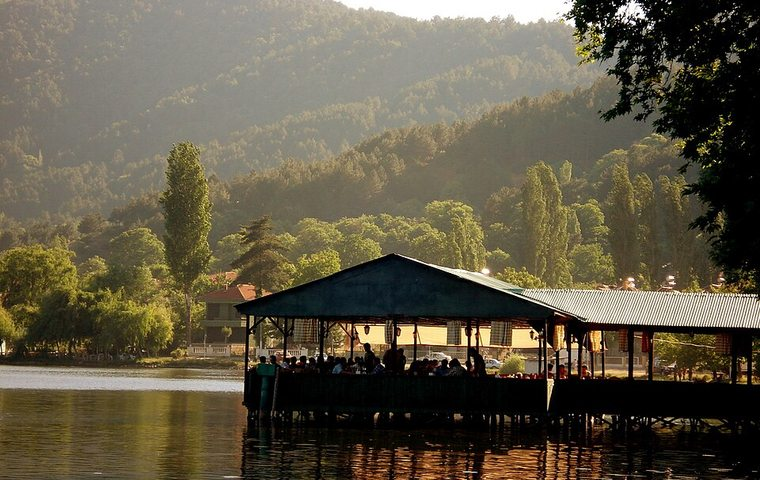
M2Menderes Masifi’nin 2.159 m’ye yükselen Bozdağlar horstu ve 1.050 m’deki Gölcük alüvyal set gölü; dikey bitki kuşaklanması ve Aydınoğulları-Osmanlı yayla saray izlerini sunar.
EN: Bozdağlar metamorphic horst (2,159 m) and Gölcük alluvial-dammed highland lake (1,050 m) with historic summer-palace remains.
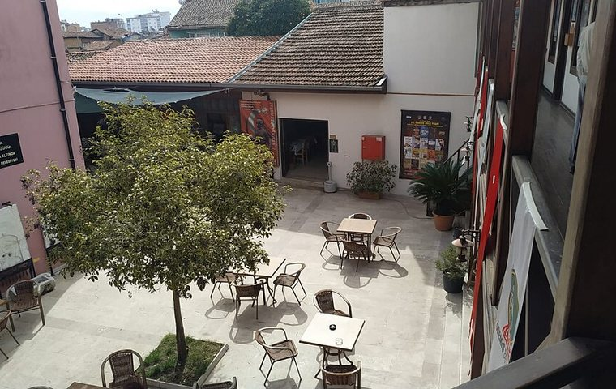
M3Küçük Menderes Ovası’nın tarihsel ticaret odağı Ödemiş; geleneksel ipek-mendil dokumacılığı, Yıldız Kent Arşivi Müzesi ve Beytitepe Höyüğü jeoarkeolojisiyle havza kültürünü yansıtır.
EN: Commercial hub of the Küçük Menderes plain preserving traditional silk weaving and the Yıldız City Archive Museum.
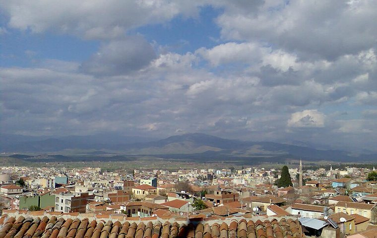
M4Aydın Dağları kuzey eteğinde tarihi han, bedesten ve arasta dokusunu koruyan Tire; coğrafi işaretli beledi dokuması, salı pazarı ve dijital miras rotalarıyla (TiREASURE) öne çıkar.
EN: Historic commercial town preserving Ottoman inns, traditional Tire beledi weaving, and digital cultural heritage trails.
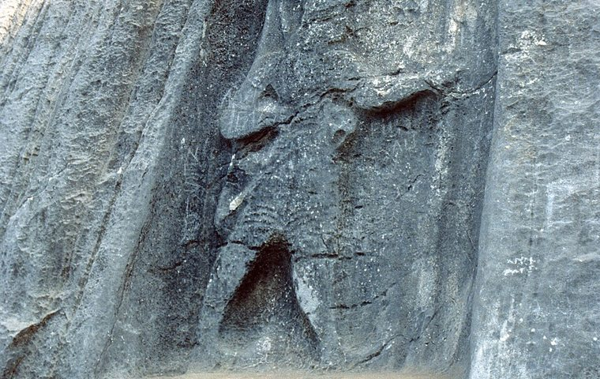
M5Türkiye’nin süs bitkileri üretim merkezi Bayındır, MÖ 13. yy Hitit-Luvi Karabel kaya kabartması ve Kemalpaşa Nazarköy geleneksel nazar boncuğu cam ocaklarını bütünleştirir.
EN: Bayındır's floriculture basin combined with the Late Bronze Age Karabel Luwian rock relief and Nazarköy glass-bead furnaces.
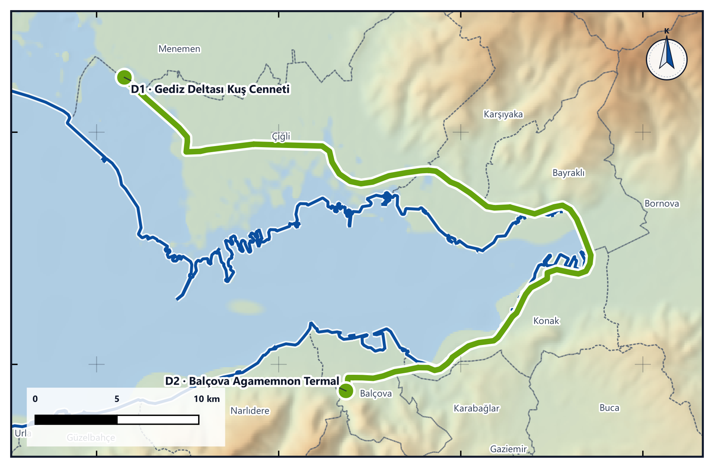
Ramsar Sözleşmesi kapsamındaki 40.000 hektarlık Gediz Deltası; İzmir Kuş Cenneti flamingo kolonileri, Homa Dalyanı, kıyı kordonları ve Çamaltı Tuzlası ile ekoturizm odağıdır.
EN: 40,000 ha Ramsar wetland hosting Greater Flamingo colonies, Homa coastal lagoon, and historic Çamaltı solar saltworks.
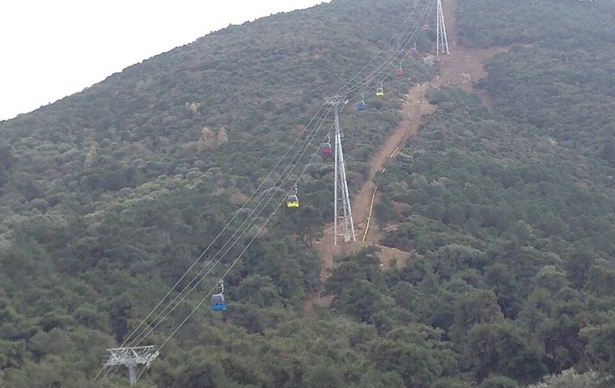
D2Aktif İzmir Fayı boyunca yükselen tarihi Agamemnon (Balçova) jeotermal alanı, Türkiye’nin öncü jeotermal konut ısıtma sistemi ve kıyıdaki İnciraltı–Çakalburnu Lagünü’nü birleştirir.
EN: Fault-controlled Balçova (Agamemnon) geothermal health field and district heating paired with Çakalburnu coastal lagoon.
| Ulaşım Sistemi | Kapsadığı Gezi Koridoru ve İstasyon Bağlantısı |
|---|---|
| İZBAN (Aliağa–Selçuk) | 136 km kuzey-güney banliyö hattı; Şirinyer (DEÜ Buca), Alsancak, Hilal, Çiğli, Menemen, Torbalı (Metropolis) ve Selçuk (Efes) erişimi. |
| İzmir Metro (M1) | Fahrettin Altay (Balçova Termal) – Konak – Çankaya (Agora/Kemeraltı) – Bornova (Yeşilova Höyüğü) doğu-batı omurgası. |
| Konak ve Karşıyaka Tramvayı | Üçkuyular – Karataş (Tarihi Asansör) – Konak – Kültürpark – Alsancak Garı ve Mavişehir–Alaybey kıyı bağlantısı. |
| İZDENİZ Körfez Vapurları | Konak, Alsancak, Pasaport, Karşıyaka, Bostanlı ve Üçkuyular iskeleleri arasında denizden Körfez morfolojisi gözlemi. |